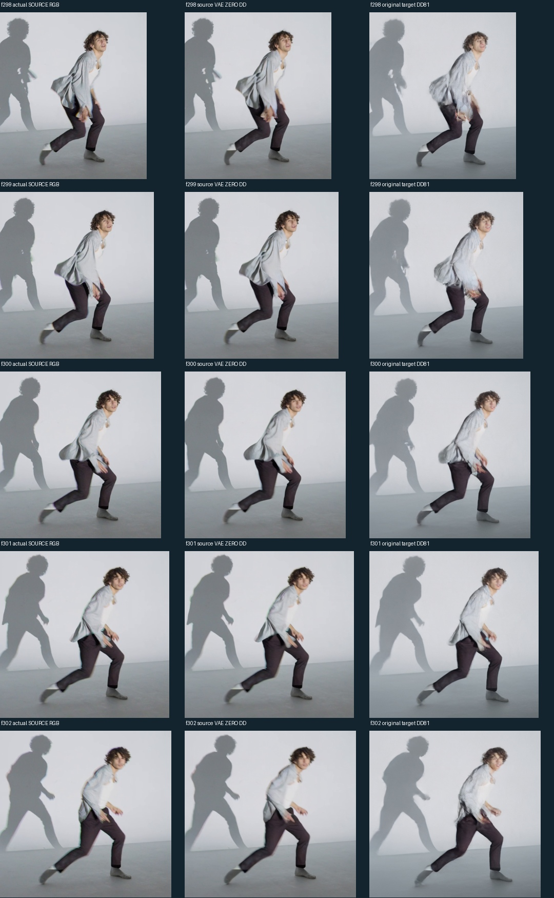
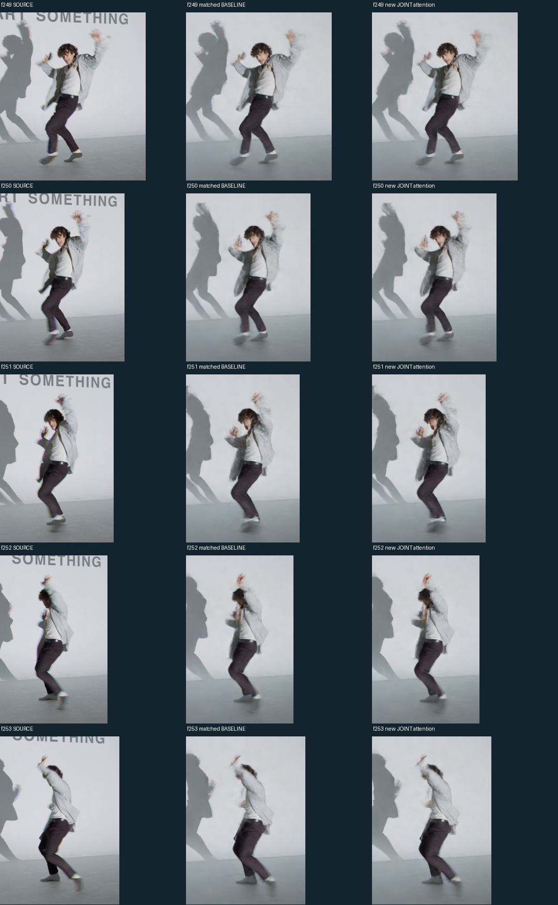
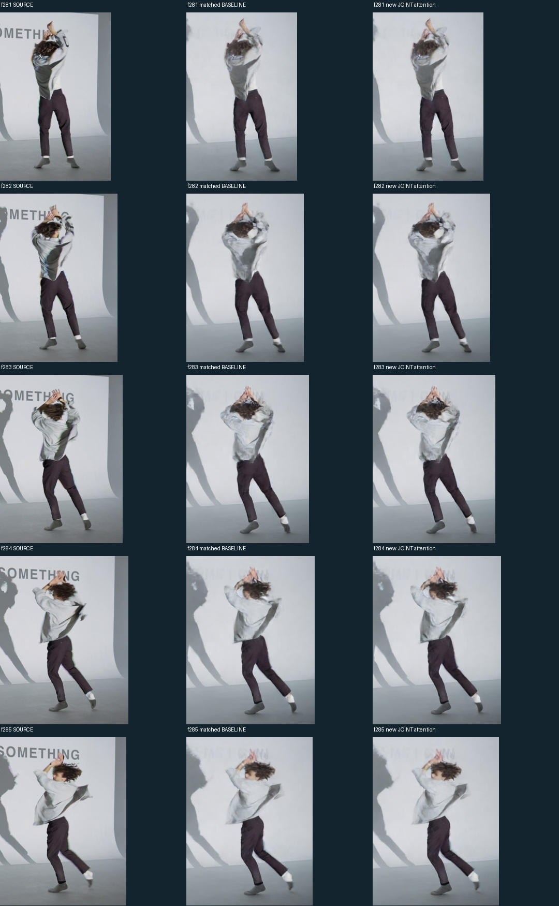
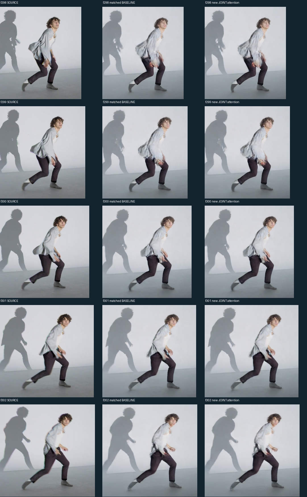
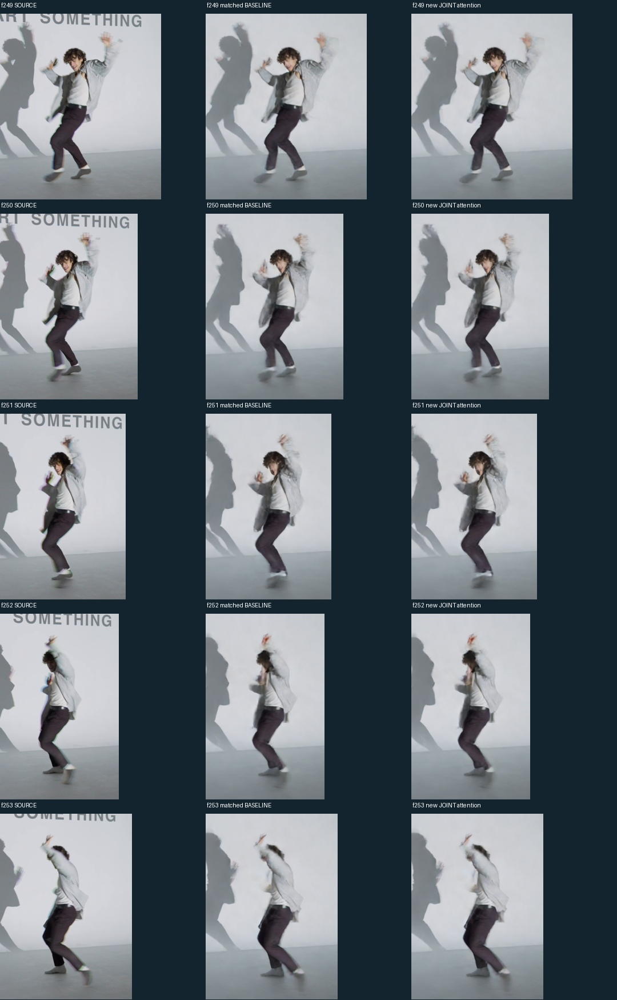
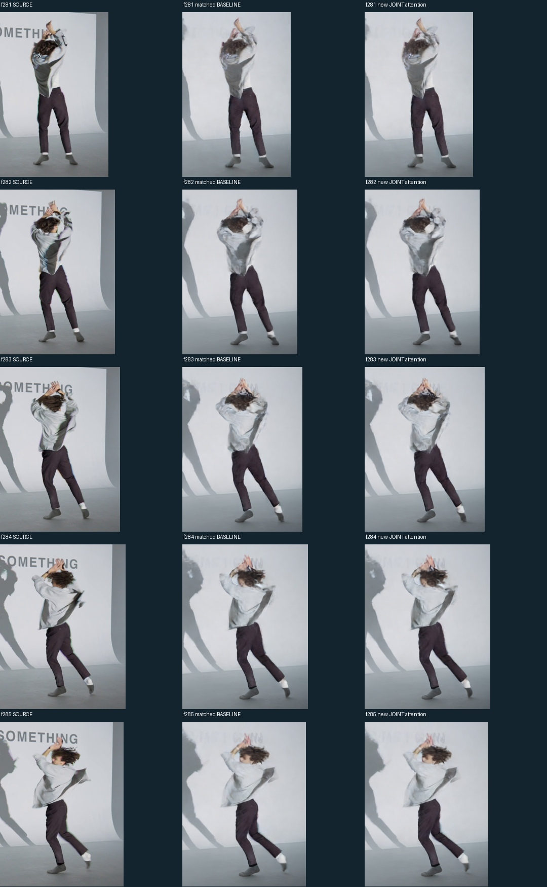
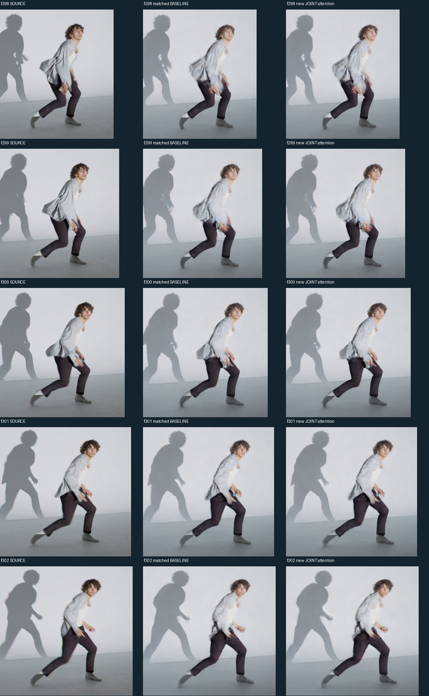
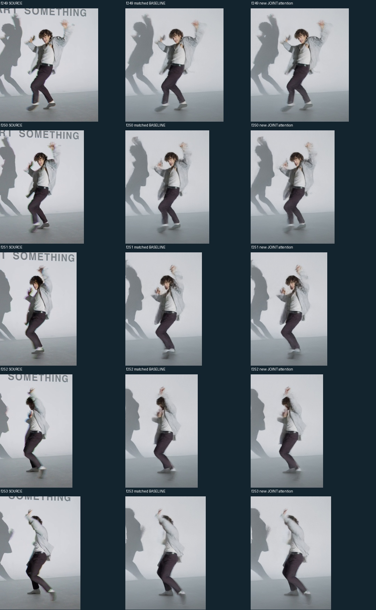
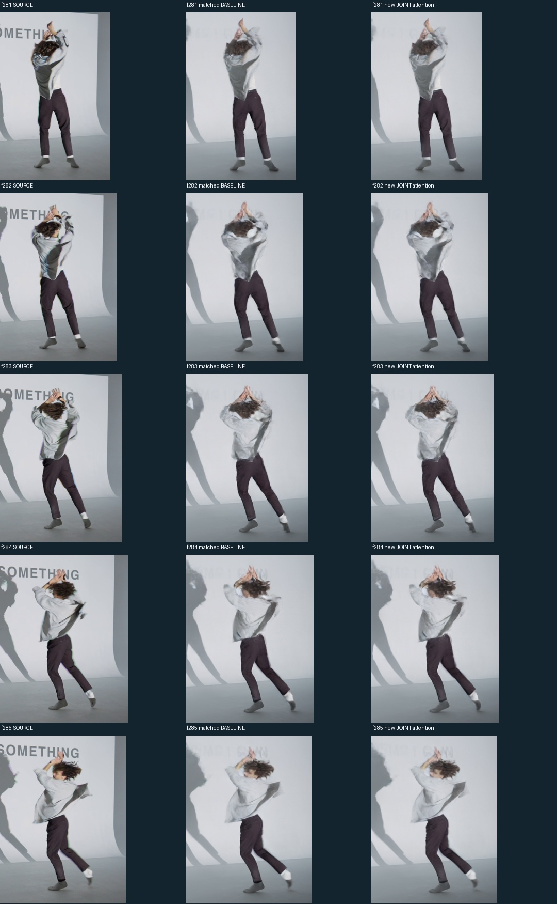
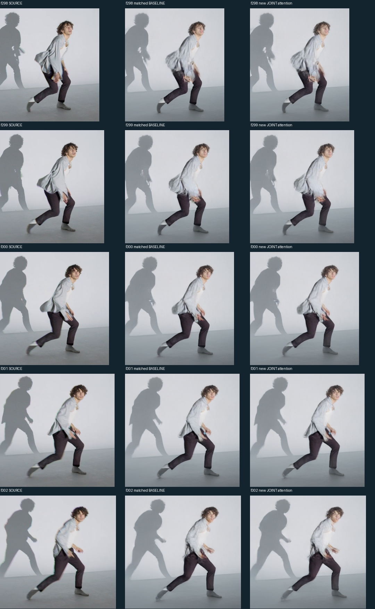

Hard 肢体质量：两类注意力，3种配置
返回三案例总表 · 本页只测试交叉动作、遮挡对应及手脚重影，不预设已经发生左右接反。
实际 Stage3 原片 · f241–321 / 81帧 / 25fps
实际 Stage2 参考 · 标称13.5°
 原始参考图
原始参考图DD与作者已有LoRA权重全部冻结。新进程先以零强度逐字节复现原基线，再验证真实注意力改动。关节经过双侧置信度、源2D/NLF一致性和交叉歧义过滤，仍是估计，不是人工真值。
前两行匹配DD41，使用同一目标参考视频初始化0.06；第三行匹配原生DD81，全段不使用目标视频初始化。第三行同时改变了帧窗协议与先验设置，不能单独据此归因先验作用；各改动均只与本行匹配基线比较。各行源视频、相机、首图、prompt、噪声与采样设置固定；不做最终RGB修补、平滑或插帧。可打开原生帧对照，避免压缩影响手部判断。
源动作条件检查：原片 / 实际源潜变量的零DD回放 / 原生DD输出
原片重新编码与模型实际源潜变量逐字节一致；同一VAE也逐帧复现了原DD的81帧输出。源回放保留了动作与手臂结构，未复现观察到的同程度额外手部重影。这仅检查源RGB支路，尚未排除几何条件、DD去噪或目标解码问题。

零次DD回放核验
| 方法与实际检查结论 | 匹配基线 | 改动后 |
|---|
| 源关节对应 · DD41 目标关节附近读取原片同一时刻、同一关节的特征，尝试改善动作与部位对应。 未见稳定肢体改善；手部重影仍在 推理与动作检查记录 交叉动作／手部原生帧对照   | 43 KB · 清晰版 | 43 KB · 清晰版 |
|---|
| 关节轨迹时序 · DD41 沿同一关节连接相邻时间的特征，尝试减轻局部重影与形变。 未见稳定肢体改善；手部重影仍在 推理与动作检查记录 交叉动作／手部原生帧对照   | 43 KB · 清晰版 | 43 KB · 清晰版 |
|---|
| 源关节对应 · 原生 DD81 在无目标参考视频初始化的原生 DD81 上测试源关节特征对应，检验无先验原生协议下是否有效。 未见稳定肢体改善；手部重影仍在 推理与动作检查记录 交叉动作／手部原生帧对照   | 42 KB · 清晰版 | 42 KB · 清晰版 |
|---|
数值确实发生改变不等于动作改善；本页按实际人工查看记录结果，没有自动认定整体画质通过。此处Hard角度也不代表45°大视角验收成功。